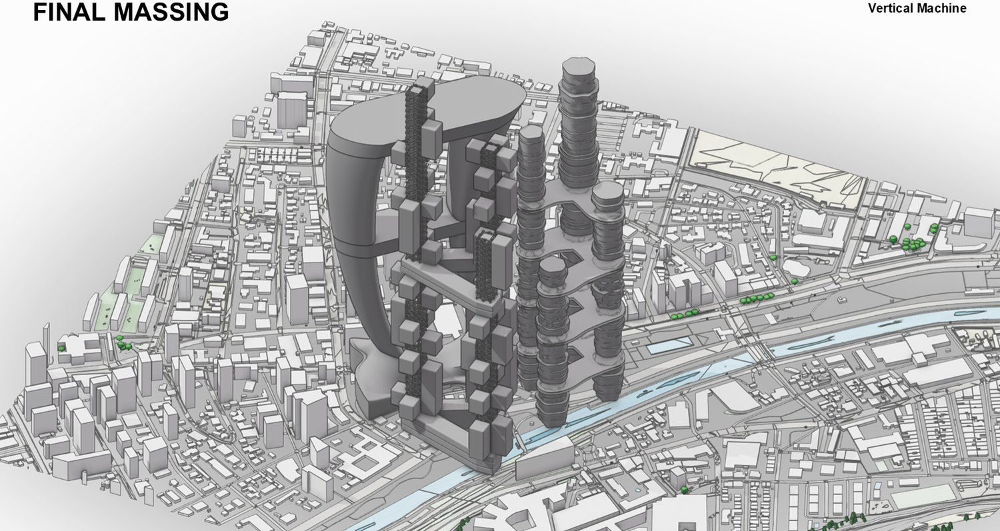
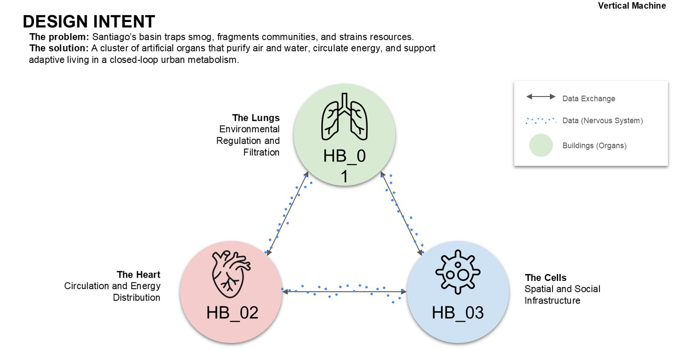
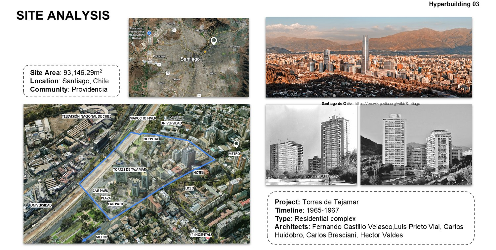
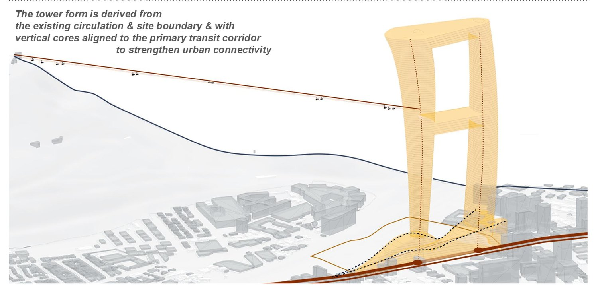
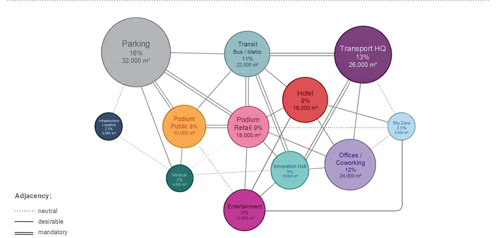
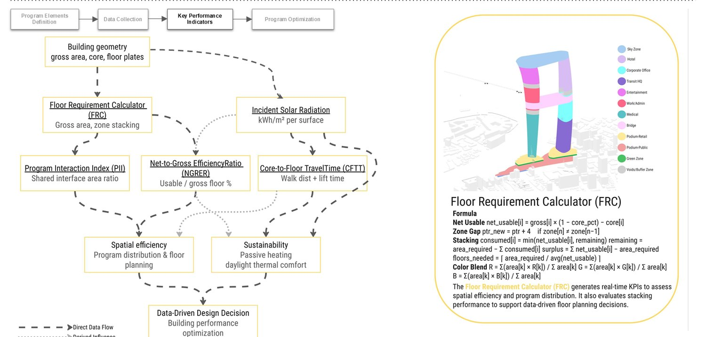
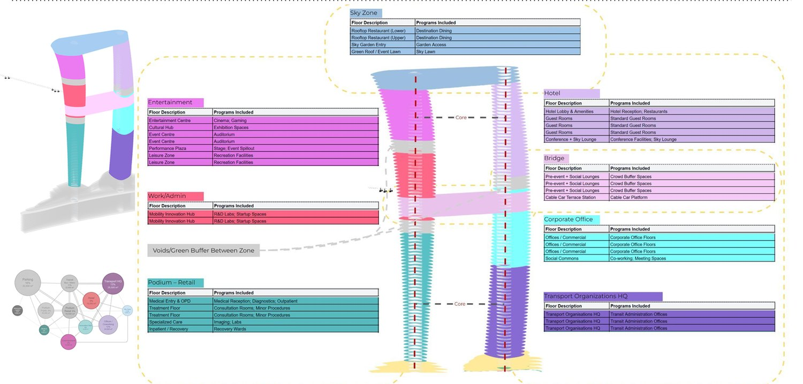
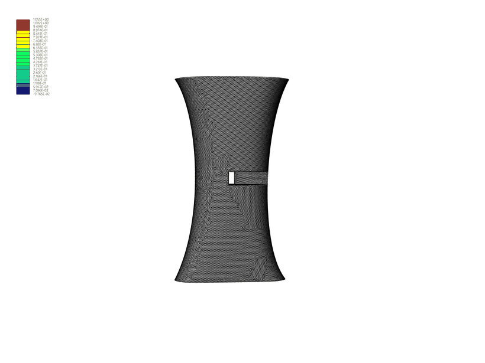
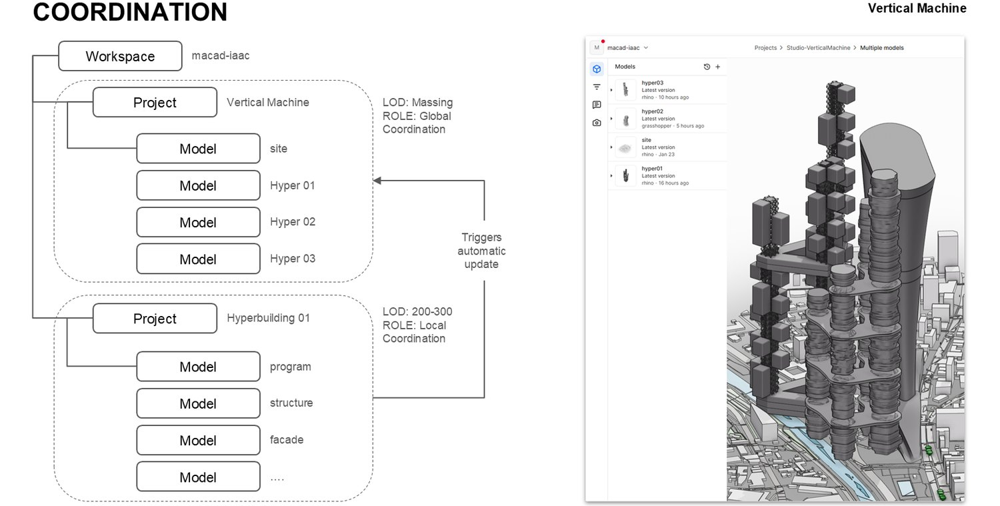
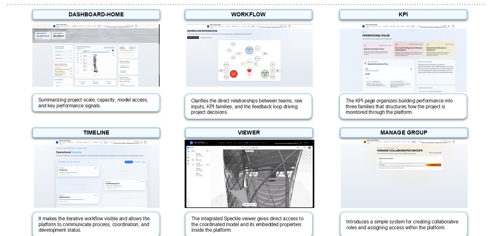

Vertical Machine
BIM & Smart Construction · StudioSantiago's basin traps smog, fragments communities, and strains resources. Vertical Machine answers with a cluster of three hyperbuildings, a closed-loop urban metabolism where each building behaves like an organ: the Lungs (HB01) filter air, the Heart (HB02) pumps circulation and energy, and the Cells (HB03) hold spatial and social life. I worked on the Program team of Hyperbuilding 02, The Heart.
-
Buildings as organsa closed-loop urban body
-
Live BIM coordinationSpeckle model sync across teams
-
Data-driven programKPI families guide every floor
Studio: multidisciplinary BIMSC26 studio (Data · Program · Structure & Facade teams) · Faculty: Pablo Antuña Molina · Cristóbal Burgos Sanhueza · Hari Krishnan

The City as a Body
The problem is metabolic, so the solution is too. Three artificial organs purify air and water, circulate energy, and support adaptive living, connected by a shared data nervous system so the cluster behaves as one living system rather than three isolated towers.

Site, Providencia, Santiago
A 93,146 m² plot in Providencia, next to the iconic Torres de Tajamar, wrapped by metro, hospitals, universities and the Mapocho river, a district shaped by a century of Chilean high-rise and earthquake engineering.

Hyperbuilding 02, The Heart
The Heart is a program-integrated transit hub, a central engine concentrating 153,000 daily travellers across eight transit modes. Its massing is derived directly from the existing circulation and site boundary, with vertical cores aligned to the primary transit corridor to strengthen urban connectivity. Just as a heart distributes blood, the building distributes people, assets, energy and data to the rest of the cluster.

Program Distribution
On the Program team I translated data and mobility networks into spatial and zoning logic, organising circulation, program zoning and adjacencies. Parking, the transit hub, the transport HQ, hotel, retail and co-working stack according to an adjacency matrix that keeps the most connected functions closest.

Data-Driven Design Decisions
Every program decision is scored against KPI families, so the design is argued with numbers rather than intuition, ISR (Incident Solar Radiation), PII (Program Interaction Index), NGRER (Net-to-Gross Efficiency Ratio), CFTT (Core-to-Floor Travel Time) and a Floor Requirement Calculator that sizes each level against spatial efficiency, sustainability and daylight.


Downstream, the Structure & Facade team pushed the same massing through topology optimization, removing material where it isn't needed until an efficient megastructure emerges from the program envelope.

BIM Coordination
The whole studio worked on one federated model tree in Speckle, global coordination at massing LOD, local coordination at LOD 200–300. When one team moves a column or edits a program block, the change propagates automatically to everyone downstream: no file requests, no downtime, no rework.

